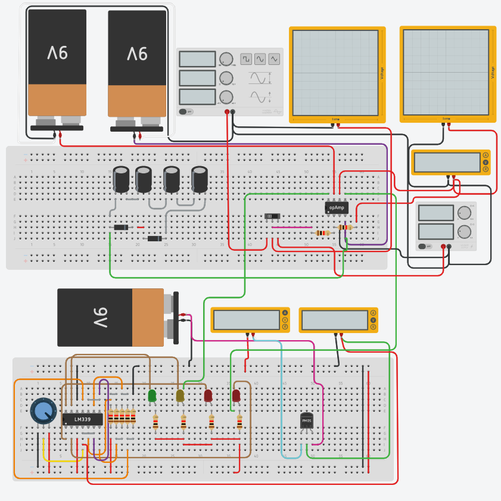

Программируемых компонентов нет.
Требования:
- 1 LM339
- 1 потенциометр на 10kΩ
- 11 резисторов на 1kΩ
- 4 светодиода
- 1 p-канальный МОП-транзистор в режиме малого сигнала
- 3 батареи 9 в
- 1 мультиметр в режиме "Сила тока"
- 2 мультиметра в режиме "Напряжение"
- 2 осциллографа с продоолжительностью в 200ms
- 1 источник питания с напряжением 4.50 и током 1
- 1 генератор сигнала с частотой 1 и амплитудой 0 и сдвигом 0
- 1 диод (слева)
- 1 стабилитрон на 3.30V (справа)
- 4 полярязованных конденсатора с емкостью 1μF и напряжением 16V
- 1 ползунковый переключатель
- 1 операционный усилитель
Результат:
У вас получится UPS.
Кол-Во тестов - 5.

Обратно